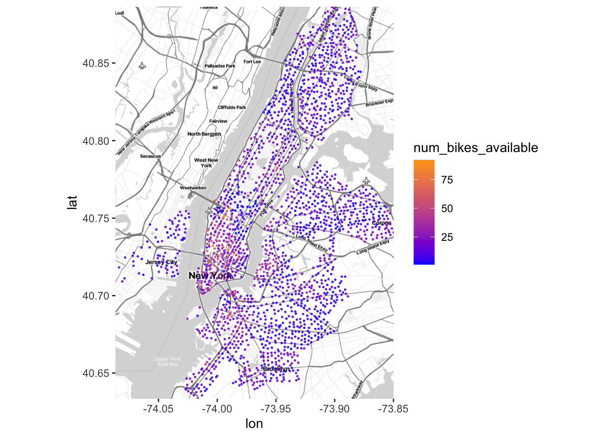
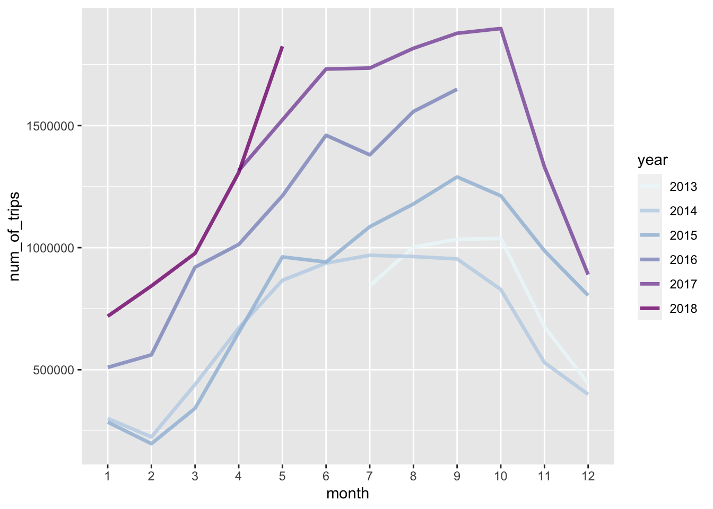
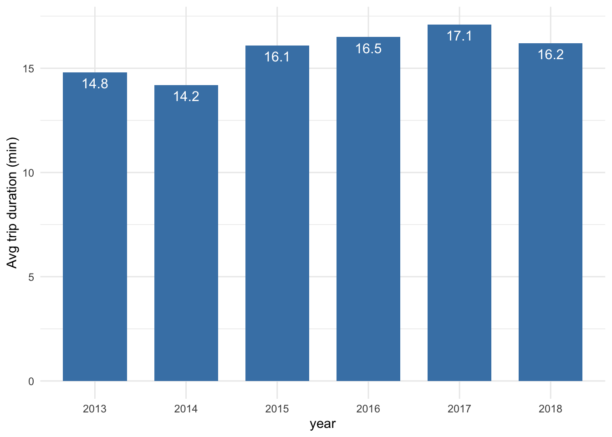
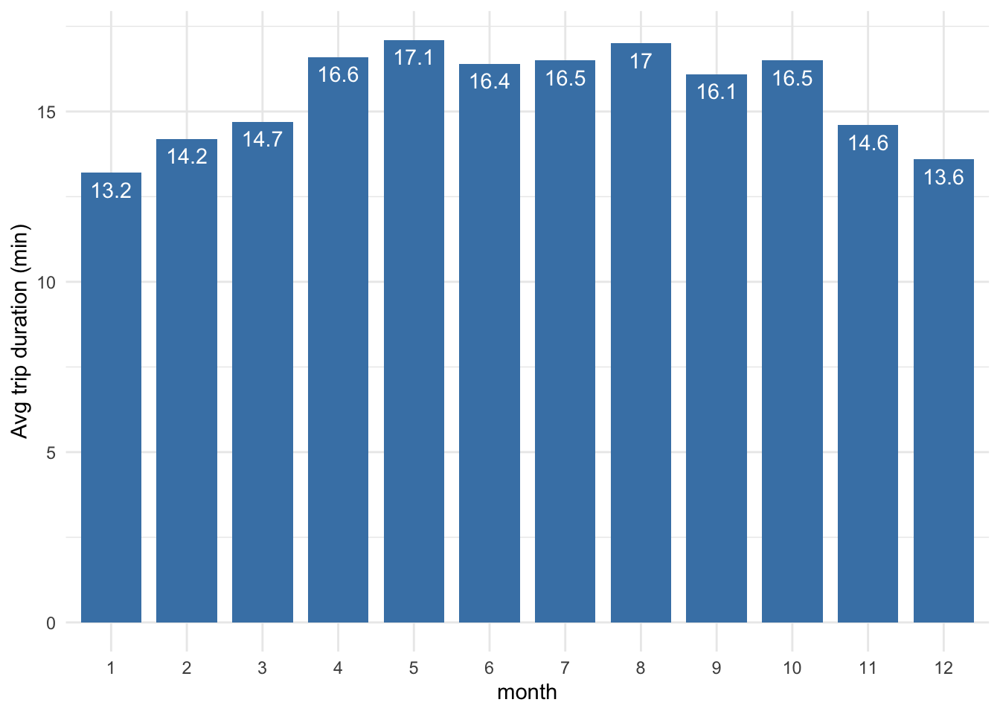
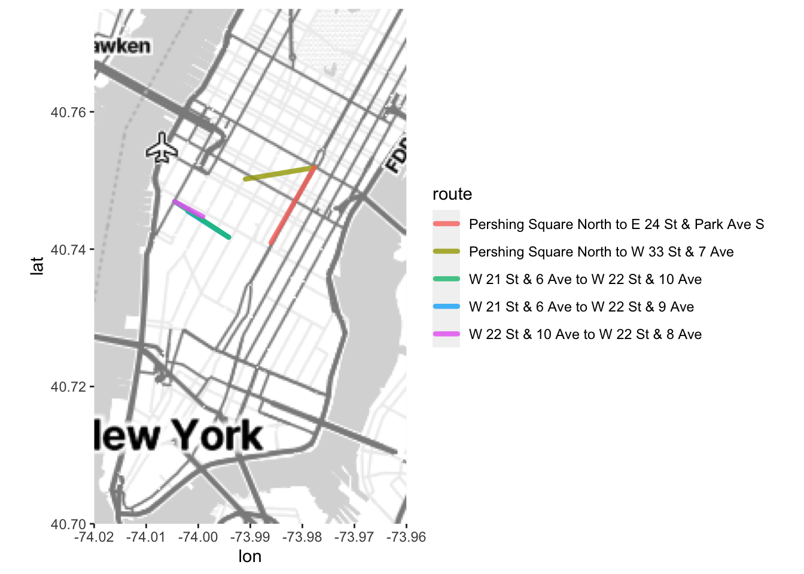
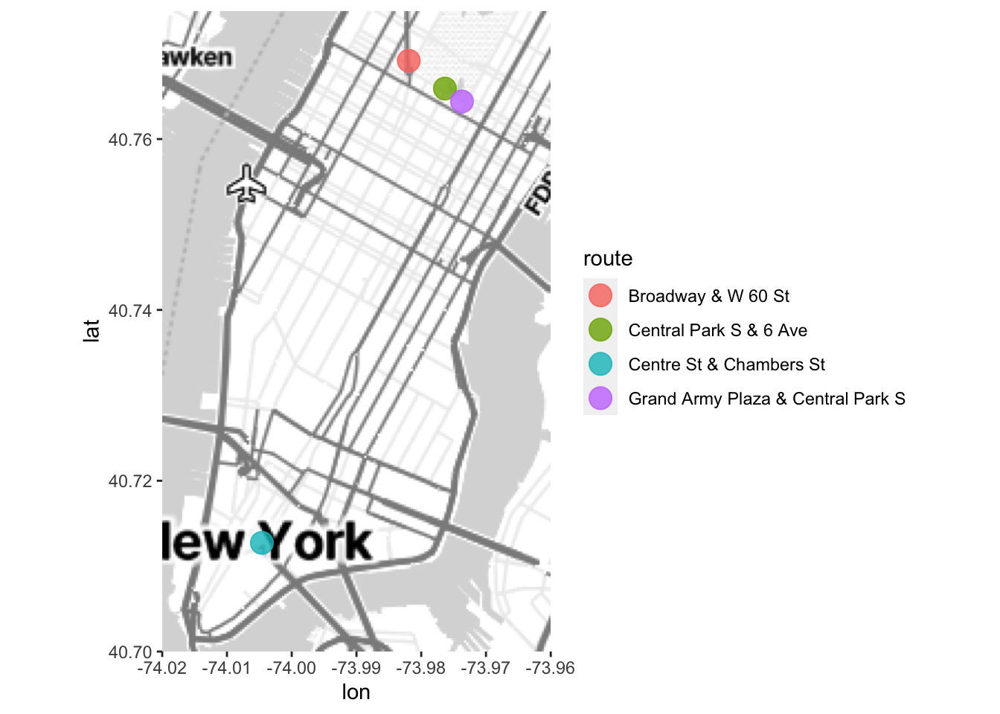

| num_of_working_stations |
|---|
| 2086 |
Surv727 Final Project: NYC Bike-share Usage Analysis
1. Introduction
1.1 Topic
This project analyzes how people in New York City use Citi Bike, their bike-sharing program. Using R packages DBI, ggplot, ggmap, and dbplyr, this project aims to discover:
The distribution of bike stations and their capacity
The usage of Citi Bike and whether it changes at different years or months
Whether the usage differs for different types of users
1.2 Dataset
The dataset used for this project is “NYC Bike Trip”, a public database from the City of New York hosted on Google BigQuery. This dataset has 2 tables: “Citibike_stations”, which includes location and capacity data of more than 2000 bike stations in NYC; “Citibike_trips”, which includes data from 58 million bike trips in 2012 to 2018. Trip date, duration, start and end stations, and user type are important variables used in the analysis.
1.3 Github Repository
Please find the relevant files for this project at: https://github.com/annechang11/surv727-final-project.
2. Analysis
2.1 Bike Station analysis
To begin the analysis, I connected to BigQuery and accessed the dataset using dbConnect from the DBI package.
I first checked how many working bike stations there are, defined as stations that have a non-zero number of bikes and are available for renting and returning bikes.
There are 2086 working bike stations. I visualized their locations by storing the queried table as a R dataframe and plotting each stations on a NYC map using ggmap.

From Fig 1, we can see that as of 2018, the bike stations cover Manhattan, Brooklyn, Queens, and west side of Jersey City. (Note: areas that were expanded to after 2018, e.g. Bronx, are not included in the dataset).
Most bike stations have a capacity of under 25 bikes, showing as blue dots on the map, while some stations at Midtown to Lower Manhattan and downtown Brooklyn have a high capacity of 75 or more bikes, showing as orange dots on the map.
The mean number of bikes per station is 15.5, and the median is 12, suggesting again that most bike stations are small with exception of a few large stations with 75+ bikes.
2.2 Bike trip analysis – number of trips
Next, I analyzed the number of bike trips by year and month. I used the SQL EXTRACT function to obtain the year and month information for each trip from the database, and plotted the number of trips by year and month. Fig 2 below shows the result.

From Fig 2 we can observe two things:
The number of trips increased year by year from 2013 to 2017. The reason is likely twofold: over time more people started to know and use the shared bikes, and the bike program continued to expand their coverage and capacity, attracting more new users.
There is an apparent seasonal difference in terms of number of trips. January and February had the lowest numbers of trips likely due to the cold weather. As spring and summer arrived, the numbers of bike trips increasingly rose from March to September, and fell again in fall from October to December.
2.3 Bike trip analysis – trip duration
Another factor to look at is the duration of trips. Fig 3 and Fig 4 below show the average trip duration (in minute) by year and by month.


From Fig 3 and Fig 4, we can see that:
The average trip duration increased over year, from about 14 minutes in 2014 to about 17 minutes in 2017. (Note: 2013 and 2018 data has missing months, so their average duration are not comparable to other years.)
There is a seasonal difference in terms of trip duration. The winter months have lower average trip duration (13-14 minutes per trip) than the summer months (16-17 minutes per trip).
2.4 Bike trip analysis – user types
Besides year and month, another interesting variable is whether the bike trip is made by a “subscriber”, who holds an annual ridership plan, or a “customer”, who pays for a single trip or a day pass to ride the bike.
| usertype | num_of_trip | Avg_trip_time |
|---|---|---|
| Subscriber | 46917572 | 13.4 |
| Customer | 6191149 | 35.8 |
From the queried result above, we can see big differences among subscribers and customers in terms of their bike usage. First, subscribers took much more bike trips than customers – about 7 times more. Second, the trips taken by subscribers on average were around 13 minutes, while the trips taken by customers were much longer, on overage 35 minutes.
These differences are likely associated with the different purposes of trips: subscribers likely use the trip for commuting or short-distance connecting, while the customers are more likely to be tourists who bought a day pass or single ride pass and used the bike to tour NYC, and hence the longer trip duration.
2.4 Popular Bike Routes
Next, I analyzed the popular shared bike “routes”, defined as different combinations of a start station (where the bike was rented) and an end station (where the bike was returned). I used the SQL CONCAT function to concatenate the start and end stations to be routes, and looked at the number of trips for each route to understand its popularity. Below is the result of the top 10 most popular routes, their number of trips and average trip duration.
| route | num_of_trips | avg_duration |
|---|---|---|
| Central Park S & 6 Ave to Central Park S & 6 Ave | 55703 | 47.2 |
| Grand Army Plaza & Central Park S to Grand Army Plaza & Central Park S | 25573 | 53.8 |
| Centre St & Chambers St to Centre St & Chambers St | 19670 | 32.9 |
| Broadway & W 60 St to Broadway & W 60 St | 19475 | 45.0 |
| 12 Ave & W 40 St to West St & Chambers St | 18667 | 24.0 |
| W 21 St & 6 Ave to 9 Ave & W 22 St | 17509 | 5.3 |
| W 21 St & 6 Ave to W 22 St & 10 Ave | 15120 | 7.0 |
| West St & Chambers St to 12 Ave & W 40 St | 14353 | 24.3 |
| West St & Chambers St to West St & Chambers St | 14165 | 26.2 |
| 12 Ave & W 40 St to 12 Ave & W 40 St | 13499 | 30.8 |
From the table, we can see that:
There are some “routes” that share the same start station and end station. In fact, the top 4 routes are all this type of routes.
For routes that have different start and end stations, the most popular route is “12 Ave & W 40 St to West St & Chambers St”, which was taken 18667 times and for on average 24 minutes.
The next two popular routes with different start and end stations are quite similar. Both start from W 21 St & 6 Ave, and end at W 22 St & 9 Ave or W 22 St & 10 Ave. These 2 routes have a volume of 17509 times and 15120 times, and the average duration is 5 minutes (to 9 Ave) and 7 minutes (to 10 Ave).
However, when looking at popular routes taken by different types of users, we see very different patterns among subscribers and customers. Fig 5 shows the top 5 most popular routes taken by the subscribers, and Fig 6 shows those for the customers.


We can see some interesting findings:
Subscribers did short trips from one location to another, while customers tended to rent and return the bike at the same station.
The most popular routes taken by subscribers are all in Midtown Manhattan and are all short routes. I looked up the average trip duration for those routes and most of them are within 5-10 minutes.
On the other hand, customers liked to rent and return bikes at stations around Central Park and Broadway, and the duration on average lasted for half an hour to an hour, much longer than those routes taken by the subscribers.
3. Conclusion
3.1 Summary
This project analyzes the usage of NYC bikeshare program from 2013 to 2018, focusing on the distribution of bike stations and their capacity, the number of trips and average trip duration, and the popular bike routes for different types of users. Visualizations are presented to help the reader grasp the information.
In conclusion:
The number of bike trips and the average trip duration gradually increased year by year, suggesting that the program is growing and people in NYC are using the bikes more and more.
There are seasonal differences in terms of number of bike trips and trip duration. Both numbers are lower for the winter months than for the summer months.
Different types of users show very different shared bike riding behavior. The subscribers (who bought the annual ridership plan) did a lot of short trips, on average for 13 minutes. The most popular routes for subscribers are all 5-10 minute short routes in Midtown Manhattan. On the other hand, customers (who bought a single trip or day pass) did fewer trips than subscribers, but the average trip duration is about an hour. Customers tended to rent and return the bike at the same station. Stations around Central Park were the most popular for them.
3.2 Limitation
There are a few limitations of the dataset and analysis:
The bike station data does not include the time when the station was built, and does not include stations that were built after 2018. If such data was included, I would be able to look at the expansion of the bike station coverage and its relationship to bike usage, to see if there were interesting patterns to uncover.
The bike trip data does not specify which user had taken a trip, only that the trip was taken by a certain type of user. This is reasonable for confidentiality reasons. The limitation is that the unit of analysis can only be “trips”, not “users”, and there is no way to distinguish whether the trips were made by a single user or different users. It would be interesting to see whether the analysis based on “users” would arrive at different conclusions from the analysis based on “trips”, if some sort of unidentifiable user data could be provided.